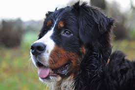

Primates
Se han descrito unas 150 especies de primates diferentes, una orden de los mamíferos a la que pertenecemos los humanos. Tienen un cráneo de tamaño grande y los ojos situados en la parte frontal, algo que les permite tener una buena visión capaz de calcular de forma exacta las dimensiones de la realidad. Se cree que su origen se encuentra unos 65 millones de años atrás. La mayoría cuentan con el pulgar oponible que les permite usar herramientas y agarrarse de forma adecuada a las ramas para poder trepar a los árboles. Son animales omnívoros y habitan en algunas zonas de Sudamérica y Centroamérica, y las especies más grandes en África y Madagascar, siempre en las zonas tropicales y subtropicales.
|
De que color es el caballo blanco de San Martin  |